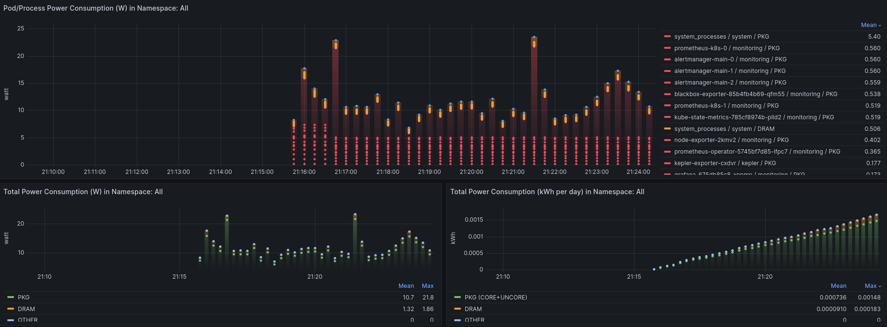

Deploy using Manifests
Getting Started
The following instructions work for both Kind and Kubeadm clusters.
Prerequisites
-
You have a Kubernetes cluster running.
Note
If you want to setup a kind cluster follow this
-
The Monitoring stack, i.e. Prometheus with Grafana is set up. Steps here
Note
The default Grafana deployment can be accessed with the credentials
admin:admin. You can expose the web-based UI locally using:kubectl -n monitoring port-forward svc/grafana 3000
If the perquisites are met, then please proceed to the following sections.
Deploying Kepler on a local kind cluster
To deploy Kepler on kind, we need to build it locally with specific flags. The full details of local
builds are covered in the section below. To deploy on a local kind cluster,
you need to build using the PROMETHEUS_DEPLOY flag.
git clone --depth 1 git@github.com:sustainable-computing-io/kepler.git
cd ./kepler
make build-manifest OPTS="PROMETHEUS_DEPLOY"
kubectl apply -f _output/generated-manifest/deployment.yaml
Deploying Kepler on a baremetal Kubeadm cluster
To deploy Kepler on Kubeadm, we need to build it locally with specific flags. The full details of local
builds are covered in the section below. To deploy on a local Kubeadm cluster,
you need to use the BM_DEPLOY and PROMETHEUS_DEPLOY flags.
git clone --depth 1 git@github.com:sustainable-computing-io/kepler.git
cd ./kepler
make build-manifest OPTS="BM_DEPLOY PROMETHEUS_DEPLOY"
kubectl apply -f _output/generated-manifest/deployment.yaml
Dashboard access
The deployment steps above will create a Kepler service listening on port 9102.
If you followed the Kepler dashboard deployment steps, you can access the Kepler
dashboard by navigating to http://localhost:3000/ Login
using admin:admin. Skip the window where Grafana asks to input a new password.

Note
To forward ports simply run:
kubectl port-forward --address localhost -n kepler service/kepler-exporter 9102:9102 &
kubectl port-forward --address localhost -n monitoring service/prometheus-k8s 9090:9090 &
kubectl port-forward --address localhost -n monitoring service/grafana 3000:3000 &
Build manifests
First, fork the kepler repository and clone it.
If you want to use Redfish BMC and IPMI, you need to add Redfish and IPMI credentials of each of the
kubelet node to the redfish.csv under the kepler/manifests/k8s/config/exporter directory. The format of
the file is as follows:
kubelet_node_name_1,redfish_username_1,redfish_password_2,https://redfish_ip_or_hostname_1
kubelet_node_name_2,redfish_username_2,redfish_password_2,https://redfish_ip_or_hostname_2
where, kubelet_node_name in the first column is the name of the node where the kubelet is running.
You can get the name of the node by running the following command:
kubectl get nodes
redfish_username and redfish_password in the second and third columns are the credentials to access the Redfish API from each node.
While https://redfish_ip_or_hostname in the fourth column is the Redfish endpoint in IP address or hostname.
Then, build the manifests file that suit your environment and deploy it with the following steps:
make build-manifest OPTS="<deployment options>"
Minimum deployment:
make build-manifest
Deployment with sidecar on openshift:
make build-manifest OPTS="ESTIMATOR_SIDECAR_DEPLOY OPENSHIFT_DEPLOY"
Manifests will be generated in _output/generated-manifest/ by default.
| Deployment Option | Description | Dependency |
|---|---|---|
| BM_DEPLOY | baremetal deployment patched with node selector feature.node.kubernetes.io/cpu-cpuid.HYPERVISOR to not exist | - |
| OPENSHIFT_DEPLOY | patch openshift-specific attribute to kepler daemonset and deploy SecurityContextConstraints | - |
| PROMETHEUS_DEPLOY | patch prometheus-related resource (ServiceMonitor, RBAC role, rolebinding) | require prometheus deployment which can be OpenShift integrated or custom deploy |
| HIGH_GRANULARITY | sets the Prometheus scrape interval for Kepler to 3s (default is 30s) | PROMETHEUS_DEPLOY option set |
| CLUSTER_PREREQ_DEPLOY | deploy prerequisites for kepler on openshift cluster | OPENSHIFT_DEPLOY option set |
| CI_DEPLOY | update proc path for kind cluster using in CI | - |
| ESTIMATOR_SIDECAR_DEPLOY | patch estimator sidecar and corresponding ConfigMap to kepler daemonset | - |
| MODEL_SERVER_DEPLOY | deploy model server and corresponding ConfigMap to kepler daemonset | - |
| TRAINER_DEPLOY | patch online-trainer sidecar to model server | MODEL_SERVER_DEPLOY option set |
| DEBUG_DEPLOY | patch KEPLER_LOG_LEVEL for debugging | - |
| QAT_DEPLOY | update proc path for Kepler to enable accelerator QAT | Intel QAT installed |
| DCGM_DEPLOY | Enable hostNetwork: true in Kepler container to access local DCGM service; use latest-dcgm Kepler container image to load DCGM library and dependencies |
NVIDIA DCGM service must be installed on the node |
Following options are available for Redfish client, you can set them as environment variables of kepler-exporter. They affect all of Redfish access from Kepler Exporter.
| Option | Default value | Description |
|---|---|---|
| REDFISH_PROBE_INTERVAL_IN_SECONDS | 60 | Interval in seconds to get power consumption via Redfish. |
| REDFISH_SKIP_SSL_VERIFY | true | true if TLS verification is disabled on connecting to Redfish endpoint. |
build-manifest requirements:
- kubectl v1.21+
- make
- go
Deploy the Prometheus operator
If Prometheus is already installed in the cluster, skip this step. Otherwise, follow these steps to install it.
-
Clone the kube-prometheus project to your local folder, and enter the
kube-prometheusdirectory.git clone --depth 1 https://github.com/prometheus-operator/kube-prometheus; cd kube-prometheus; -
This step is optional. You can later manually add the Kepler Grafana dashboard through the Grafana UI. To automatically do that, fetch the
kepler-exporterGrafana dashboard and inject in the Prometheus Grafana deployment.$ KEPLER_EXPORTER_GRAFANA_DASHBOARD_JSON=`curl -fsSL https://raw.githubusercontent.com/sustainable-computing-io/kepler/main/grafana-dashboards/Kepler-Exporter.json | sed '1 ! s/^/ /'` $ mkdir -p grafana-dashboards $ cat - > ./grafana-dashboards/kepler-exporter-configmap.yaml << EOF apiVersion: v1 data: kepler-exporter.json: |- $KEPLER_EXPORTER_GRAFANA_DASHBOARD_JSON kind: ConfigMap metadata: labels: app.kubernetes.io/component: grafana app.kubernetes.io/name: grafana app.kubernetes.io/part-of: kube-prometheus app.kubernetes.io/version: 9.5.3 name: grafana-dashboard-kepler-exporter namespace: monitoring EOFNote
The next step uses yq, a YAML processor.
yq -i e '.items += [load("./grafana-dashboards/kepler-exporter-configmap.yaml")]' ./manifests/grafana-dashboardDefinitions.yaml yq -i e '.spec.template.spec.containers.0.volumeMounts += [ {"mountPath": "/grafana-dashboard-definitions/0/kepler-exporter", "name": "grafana-dashboard-kepler-exporter", "readOnly": false} ]' ./manifests/grafana-deployment.yaml yq -i e '.spec.template.spec.volumes += [ {"configMap": {"name": "grafana-dashboard-kepler-exporter"}, "name": "grafana-dashboard-kepler-exporter"} ]' ./manifests/grafana-deployment.yaml -
Finally, apply the objects in the
manifestsdirectory. This will create themonitoringnamespace and CRDs, and then wait for them to be available before creating the remaining resources. During theuntilloop, a response ofNo resources foundis to be expected. This statement checks whether the resource API is created but doesn't expect the resources to be there.kubectl apply --server-side -f manifests/setup until kubectl get servicemonitors --all-namespaces ; do date; sleep 1; echo ""; done kubectl apply -f manifests/Note
It takes a short time (in a Kind cluster), for all the pods and services to reach a
runningstate.